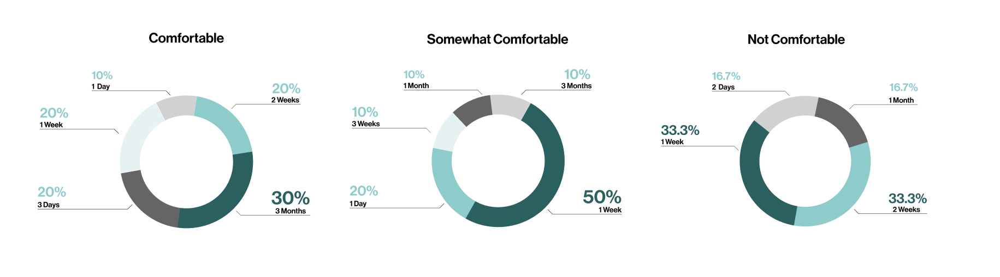
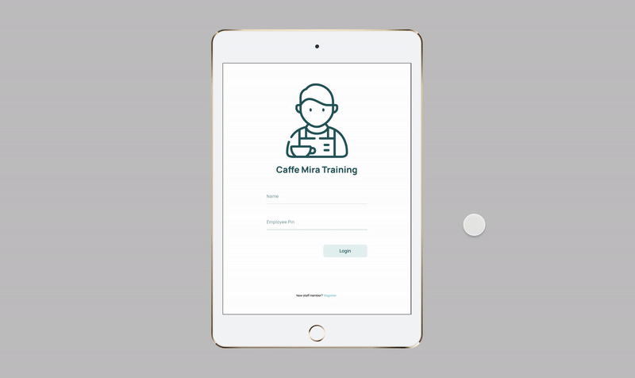
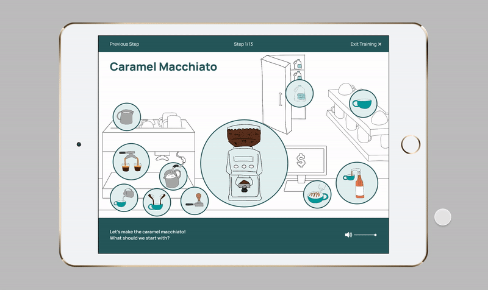
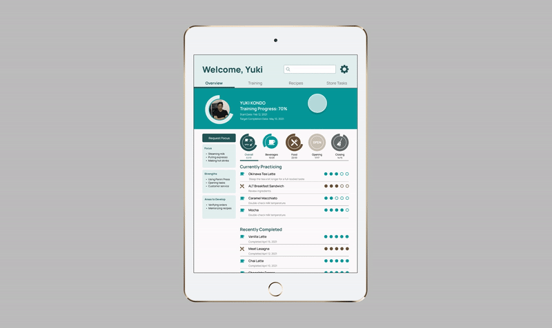
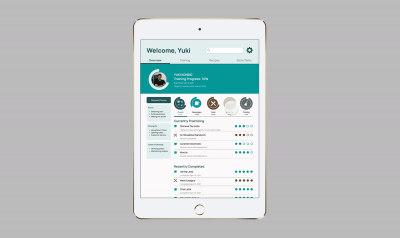
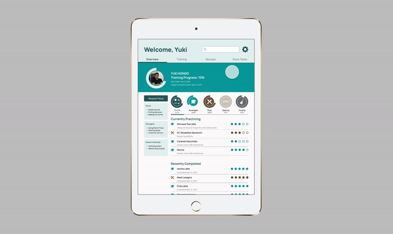
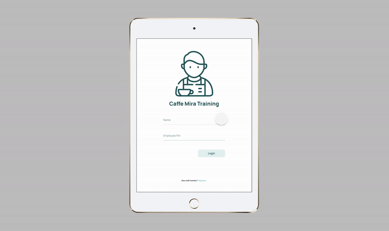

Caffe Mira

About:
Caffe Mira is a cafe located in downtown Vancouver with two locations. They are known for their great customer service and aims to present themselves as a Canadian-Asian cafe. Staffing at Caffe Mira is made up of only Japanese and Korean working holiday visa holders.
Role:
UX Researcher, UX Designer, UI Designer
Tools:
Figma, Photoshop, Adobe Premiere
Team:
Virginia Chu, Clare Huang, Shaanti Banah
Duration:
January 2021 - April 2021
Vancouver Cafe, International Workers
Caffe Mira staff are comprised of four Japanese working holiday staff, two Korean working holiday staff, and one Canadian staff. Caffe Mira only hires working holiday staff from Japan and Korea and since the owner is reluctant to hire locals from previous bad experiences, she ends up working as a full-time employee to cover shifts when needed. This ultimately takes time away from her focus of expanding Caffe Mira to five locations. She believes that this is due to understaffing issues.
Initial Research Findings
After initial primary and secondary research as well as conducting interviews with the current staff and management, three key insights were found:
- Not an Understaffing issue: Caffe Mira has six full-time workers and two part-time workers. However, half of the workers are currently still in training despite working for three to six months.
- Long Trainee Status: Caffe Mira provides initial training where trainees closely shadow a senior staff member for two full-day shifts. After this two-day training period, they have to be scheduled to work shifts with another senior staff for a prolonged period until they are fully comfortable to take shifts independently.
- English as a Language Barrier: Caffe Mira requires all staff to communicate with each other in English while on the floor. This means all training is done in English despite a vast majority of Caffe Mira staff carrying English as their second language.
Journey Maps and Personas
To understand our audience better, the team created a personas and the journey maps to visualize intervention opportunities as well as to see if the research aligned with the current situation.
Owner


Trainee


Primary Research Methods
Although many interviews and other forms of primary research methods were used, the two methods that gave the team key insights were through surveys and participatory workshops.
Conducting a Survey
In order to gather more data regarding the training experiences of baristas across the Lower Mainland, a Google Form survey was created and shared using Reddit and Instagram. From this survey 30 responses were collected and studied.
Through the survey, the team recognized that there is a difference in learning pace for each and every individual. The survey results show that duration of training does not correlate to higher comfort levels when exiting training. This led the project to focus on exploring ways to increase confidence levels for trainees by personalizing the training experience to allow learning at individual paces
Participatory Workshop
Using the information gathered from interactions with Caffe Mira’s owner, staff member interviews, and the barista survey responses, a participatory workshop was designed. This included separate set of activities for the owner and staff and utilized more image-based activities and translations for the staff. The goal of this workshop was to evaluate how well the synthesized information aligned with the goals and thought processes of both employees and the owner.
Staff Activities

Owner Activities

Workshop Insights
- No Standard Training Practices: An employee is deemed finished training when they know how to do every barista and kitchen task, but there is no manual or training program for the employees and owner to follow to evaluate progress.
- Staff Desire Extra Resources: Employees have expressed a desire to be able to study recipes and store procedures during downtime on shift and off the clock to increase retention and expertise.
- Core Reason for Wanting Reference Material: Staff fresh out of training tend to forget and make mistakes therefore requiring the owner to double-check on their work.
Synthesized Insights
Synthesizing the research that had been conducted, the three key insights were derived:
- Training at a Comfortable Pace: The fast paced environment of Caffe Mira forces new hires to act fast and pick up training very quickly.
- Focus on Memory Retention: When staff can retain memory of recipes and in-store procedures easily, they can focus their energy on performing well and applying their knowledge to practice.
- Comfort is Key: Good customer service is the main quality that the owner looks for when hiring staff. When staff are fully comfortable within their position, they will be able to provide good customer service.
Design Focus
With consideration of the synthesized insights, the team focused on the following problem statement and derived framing to solve this issue:
01 Problem Statement
In order for Caffe Mira’s trainees to exit training feeling fully confident in their abilities, we propose creating a digital learning management system where trainees and trainers can track the progress of the training, identify training needs, and meet the requirements to graduate from the trainee status.
02 Derived Framing
How might we help the trainee and the owner through the training process with a trackable and personalized experience, where both parties can feel confident when training is complete?
Final Solution
The team created a just-in-time learning management system as a tablet application to enhance the learning experience at Caffe Mira. It will help retain information and allow staff to leave training feeling prepared and confident.
The application has two parts: a training component and a training tracking component. Initial training will be done through the app for the first two days and then hands-on training will be tracked through the app as well.
Initial Training
Signing in
When a new trainee starts the application, they will be able to access the training material either using the training tab or clicking on the CTA button where the personalized profile would be. The personalized profile will not be created until after their initial training is complete. The trainee will have to watch the related video before proceeding to the training activity.
The Activity
The activity that follows the video will help with retaining information from the video as well as to test the trainees when it comes to step-by-step procedures in creating a product offering. The activity will give tips on how to make the product better when they get the steps in correct order or it will prompt the trainee to try again when they make a mistake.
Tracking the Progress
Both trainees and trainers will be able to track the progress of training as well as review feedback. Trainees will also be able to request for more help using the focus function of the application.
Requesting Focus
On the personalized profile, a trainee will be able to submit a focus request form which will notify the trainer. The trainer will then be able to accept the focus and be aware that the trainee would like more help on a specific topic.
Reviewing Feedback
When clicking on a certain product offering in their personalized profile, trainees are able to review feedback that the trainer has given them on a certain product offering that they are currently focusing on.
Overall Progress Review
In the personalized profile, the trainee is able to see their entire training progress as well as view the training progress when it comes to different categories of training: beverages, food, opening, and closing procedures. They are able to filter through these sections to see what is left to do and how many more times they need to do them to graduate from training.
Trainer View: Trainee Progress, Focus Requests, Giving Feedback
When the trainer logs in, they will be able to see the progress of all the trainees. The trainer will then be able to look at individual trainees' profiles and also see a notification for focus requests. They will also be able to give feedback for a certain product offering that the trainee is working on.
Demo Video
Why an iPad Application?
The team initially considered a mobile application, however as the owner requested that the recipes stay within the store, it was more appropriate to access the app through the store iPads. Also, in comparison to using phones within the stores, iPads were deemed more acceptable in the eyes of the cafe customers. A staff using their mobile phone during shift might seem inappropriate and unprofessional whereas iPads are more accepted as they are now replacing traditional POS systems.
Reflection
During this four month project, I realized how important it is to research, research, and research. Initially the team focused on problems that wasn't the actual problem and we were able to dig deeper to actually see the underlying causes. Without really understanding the underlying causes, the project would've found a shallow design problem and provided a shallow design solution. This was also the first time designing an English application for people who spoke English as a second language. The importance of understanding our audience was another takeaway and the considerations we needed to take before diving into the actual design. Thus concluding that the most important step before diving into any design project is to make sure that the research is done correctly, ensuring that it's the right research, and double checking that the research is accurate.